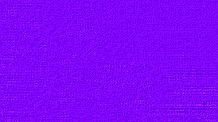

Byron: The Cybernovel
The following pages are
expurgated and abridged from a work in progress.
Comments to the author:
send e-mail to Anne Ridsdale Mott
byronmania [at] shaw [dot] ca
or snail-mail to:
P.O. Box 1374, Point Roberts, WA, USA, 98281-1374